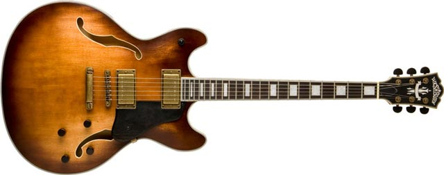

Welcome to Jack's Signature Guitar Place, the #1 spot in Athens, Ga to buy and sell used or new guitars. We have the best selection of guitars, at the best price! Many of the greats have bought from this store, so come stop by whenever to check out our selection!. Our four most popular guitars are listed below along with the amount we have in stock and the price of each guitar.
| Type of Guitar | Amount in Stock | Price of Guitar | |
|---|---|---|---|
| Fender Stratocaster | 30 | $300 | |
| Fender Telecaster | 22 | $450 | |
| Gibson Les Pau | 14 | $200 | |
| Gibson SG | 26 | $275 |
The guitar is one of the greatest musical inventions of all time, invented all the way back in the 15th century. We take this into consideration when opening the shop, and therefore stock our store with only the best guitars. We also give lessons to people, so if you want to learn how to be the next Jimi Hendrix, come sign up for one of our private one on one sessions!
We supply over 30 different types of guitars, because we want to fulfill the desires of our customers searching for the perfect guitar. If you would like to contact us, our information is listed below.
Thanks for visiting our website! Now enjoy this clip of one of the greatest guitar solos of all time (for a little inspiration). Rock On! Jimi Hendrix performs the National Anthem.